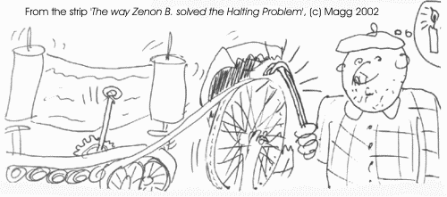

|
|||||||||||||||||
|
Server time: 2006-01-10 05:49:57 |
SPOJ Problem Set289. The Turing Music BoxProblem code: TMBOX
If you've ever dealt with the theory of information, you are no doubt familiar with the theoretical notion of a Turing Machine. But have you ever wondered what you could do if you got a real Turing Machine -- one of those big metal things with all the cranks and levers and rolls of infinite tape that looks suspiciously like toilet paper?... The sad answer is: there are few interesting things that can be done with such a machine. Even problems that have a little charm in the theoretical model (like the intractable Halting Problem) can be solved very efficiently with practical brute-force algorithms (see e.g. the figure at the end of the problem description). But there is one thing that you can do with a practical Turing Machine, and can't do with a theoretical one, and it is: to use it as a music box. Our Turing Machine has exactly one state variable (an integer in the range 0 to 999) and is equipped with an infinite tape, consisting of cells with symbols from a given alphabet encoded on them. A movable read/write head is positioned over some cell of the tape, and is operated according to the list of rules encoded in the machine. The rules are of the form S1 C1 S2 C2 M, which means: if the machine is in state S1 and C1 is written in the current cell, change state to S2, write C2 in the current cell, and move the head as described by move M (one cell left, one cell right, or not at all). If no matching rule is found for the given state the machine should halt. Now, here is the good bit. The head makes a creaking sound when performing each rule. It goes da when moved right, di when moved left, and um when left in place. Suppose that each cell of the tape can contain one of 16 possible symbols, formed as the concatenation of exactly two of the words: da, di, um and sh for silence. Initially, nearly all the cells of the tape are filled with the symbol shsh. Only a few (not more than 500) consecutive cells form a piece of music, each cell encoding a pair of sounds (one of 9 combinations of da, di or um, without any silences). The head of the machine is initially positioned over the leftmost of the cells containing sounds. Now it is your task to use the Turing machine to play the piece of music written on its tape (as read from left to right, starting from the initial position of the head, as far as the first silence) as accurately as possible, using the head itself to produce the sounds required.
OutputThe output of your program must contain a set of rules describing the behaviour of the Turing Machine designed for playing music. Each rule must be of the form S1 C1 S2 C2 M, where S1 and S2 are integers from the range 0..999, C1 and C2 belong to the 16 symbols of the alphabet, while M describes the move direction of the head by the sound it makes (da, di or um). ScoreYour program will be tested multiple times for different pieces of music written on the tape. The score of your program is equal to the total of non-negative scores, taken over all test cases. For a test case with n notes (n/2 non-silent cells) your program will receive n-d points, where d denotes the edit distance between the music played and the music required (i.e. the minimum total number of notes that have to be inserted into or changed in both the pieces to obtain the same piece of music). ExampleConsider the following set of rules output by a program: 000 dada 000 dada da 000 umda 000 dada da 000 shsh 000 shsh da 000 didi 001 didi di 001 dada 002 didi di Then the results of exemplary testing could be as follows: Music: da da|da da|da da|di di|um um Plays: da da da di di Score: 5 Music: um da|um da|um da|da um|di di Plays: da da da Score: 3 Total: 5 + 3 = 8 points Bonus info: There are no more than 100 tests. The score format is s.xxyy, where xx denotes the number of tests for which your machine played the music perfectly, yy - the number of tests for which it received a positive score. 
|
||||||||||||||||
| |||||||||||||||||